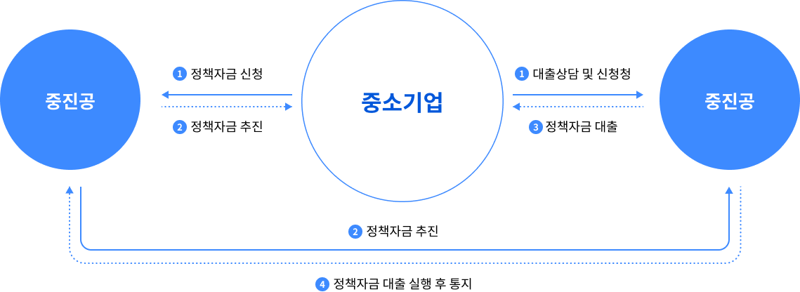

중소기업진흥공단
대리대출방식
- 은행을 통해 기업에 정책자금 융자
* (대리대출 취급 은행, 15개) 경남, 광주, 국민, 대구, 부산, 신한, 우리, 전북, 제주, 하나, SC제일, 기업, 산업, 농협(중앙회), 수협(중앙회)


성장 공유형
- 융장에 투자요소를 복합한 방식으로 성장가치가 큰 중소·벤처 기업이 발행한 전환사체 등을 중진공이 인수
* (대리대출 취급 은행, 15개) 경남, 광주, 국민, 대구, 부산, 신한, 우리, 전북, 제주, 하나, SC제일, 기업, 산업, 농협(중앙회), 수협(중앙회)
융자 대상
-
『중소기업기본법』상의 중소기업자제한기업
* 세부사항은 각 사업별 정책자금 융자계획에서 규정하고, 주된 사업의 업종이 융자제외 대상 업종(별표1)에 해당하는 경우에는 융자대상에서 제외
- 전략산업
- 미래성장동력산업(별표3, 3-1)
- 뿌리산업(별표4)
- 소재·부품산업(별표5)
- 지역전략·연고산업(별표6)
- 지식서비스산업(별표7)
- 문화콘텐츠산업(별표8)
- 바이오산업(별표9)
- 융복합 및 프랜차이즈산업(별표10)
- 물류산업(별표11)
- 유망소비재산업(별표18)
-
융자제한기업
- 세금을 체납중인 기업. 단, 세금분납계획에 따라 성실하게 세금을 납부하고 있는 기업은 융자대상에 포함
- 전국은행연합회의 “신용정보관리규약”에 따라 연체, 대위변제·대지급, 부도, 관련인, 금융질서문란, 화의·법정관리·기업회생신청·청산절차 등의 정보가 등록되어 있는 기업
- 기타 허위 또는 부정한 방법으로 융자를 신청하거나 대출자금을 융자목적이 아닌 용도로 사용한 기업
- 임직원의 자금횡령 등 사회적 물의를 일으킨 기업
- 휴·폐업중인 기업. 단, 재해를 직접 원인으로 휴업중인 기업은 가동 중인 기업으로 간주하여 융자대상에 포함
-
다음에 해당하는 우량기업
- 중진공 신용위험등급 최상위인 CR1등급(단, 업력 3년 미만 기업 및 최근 결산연도 자산총계 10억원 미만의 소자산기업은 예외)
- 유가증권시장(코넥스제외), 코스닥시장 상장기업
- 최근 재무제표 기준 자본총계 300억원 이상 기업
- 최근 재무제표 기준 자산총계 1,000억원 초과 기업
- 신성장기반자금 중 고성장(가젤형)기업육성자금은 신용평가회사 BBB까지, 자본총계 300억원 이상 또는 자산총계 1,000억원 초과기업 지원 가능
-
업종별 융자제한 부채비율(별표2)을 초과하는 기업(협동화 및 협업사업은 승인 신청 시 기준)
- 융자제외 업종 운용기준
자금조달 여건이 열악한 우수기술 보유 유망 중소기업의 장기·시설자금 중심 지원 → 한정된 재원의 효율적 배분을 위해 제외업종 운용 - 사행산업 등 국민 정서상 지원이 부적절한 업종(도박·사치·향락, 건강유해, 부동산 투기 등)
- 정부 등 공공부문에서 직·간접적으로 운영·지원하는 업종(철도 등 운송, 도로 및 관련시설 운영업 등)
- 고소득 및 자금조달이 상대적으로 용이한 업종(법무·세무·보건 등 전문서비스, 금융 및 보험업 등)
- 자영업 등 소상공인 자금 지원이 적합한 업종(소매업, 음식·숙박업, 기타 개인 서비스업 등)
- 융자제외 업종 운용기준
-
융자 신청일 현재, 업력 5년 초과 기업 중 다음에 해당하는 한계기업 및 중진공 지정 부실징후기업
- 2년 연속 매출액이 50%이상 감소한 기업
- 2년 연속 적자기업 중 자기자본 전액 잠식 기업
- 3년 연속 ‘이자보상배율 1.0 미만’이고, 3년 연속 ‘영업활동 현금흐름이 ( - )’인 기업
- 최근 3개월 내 연체일수 45일 이상 또는 10일 이상이 4회 이상인 기업
- 중진공 신용위험등급 최하위(CR6) 등급(재도약지원자금 중 재창업자금 및 구조개선전용자금 적용 제외)
- 융자심사에서 탈락한 기업으로 6개월이 경과되지 아니한 기업
(신청연도가 다르거나, 다른 자금의 융자심사에서 탈락하더라도 재도약지원자금(사업전환, 무역조정, 구조개선전용), 긴급경영안정자금(수출금융, 일시적경영애 로, 재해자금)은 신청가능) -
융자 신청일 현재, 업력 5년 이상 법인기업 중 정부(5개부처 해당자금) 및 광역 지방자치단체 등을 통한 정책자금(소상공인지원자금 제외) 지원실적이 다음에 해당하는 기업(중소기업지원사업 통합관리시스템(http://sims.go.kr)을 통해 지원실적 확인)
- 시설자금 : 시설자금 대출잔액 45억원(비수도권은 50억원) 이상(단, 협동화 및 협업사업은 실천계획 승인 시에 해당여부를 판단)
- 운전자금 : 최근 1년 이내 2회 이상 지원기업(단, 긴급경영안정자금, 재도약지원자금(사업전환자금(무역조정포함), 재창업자금), 투융자복합금융자금(성장공유형 대출)은 제외)
* 다음의 전략산업 영위 및 사업재편 승인 기업에 대해서는 연간예산의 일정부분을 우선 배정